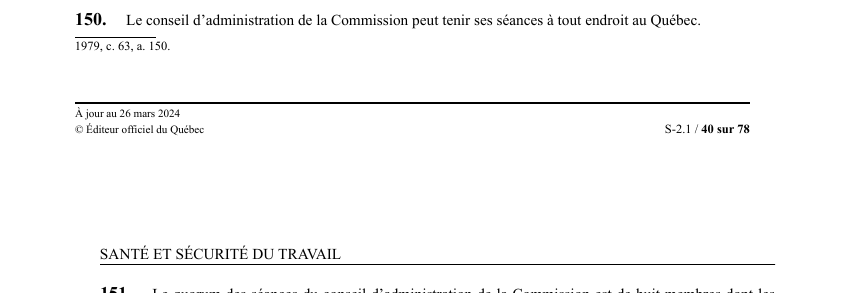

art-150-LSST : lieu des séances du conseil
Un article du wiki ⚖️ Recueil législatif
🌐 LegisQuébec · 📄 PDF officiel (page 40)
Texte officiel : capture du PDF

🔗 Ouvrir a cette page : LSST.pdf : page 40 · texte a jour au 26 mars 2024
En bref
Le conseil d'administration de la Commission peut tenir ses séances à tout endroit au Québec. Il s'agit d'une obligation.
Voir aussi
- art. 148 : comblement des vacances au conseil · champ d'application : toute vacance parmi les membres du conseil d'administration, autre que celle du président-directeur général, est comblée suivant les règles de nomination prévues par la présente loi.
- art. 149 : rémunération des membres du conseil · le gouvernement fixe le traitement et, s'il y a lieu, le traitement additionnel, les honoraires ou les allocations de chaque membre du conseil d'administration autre que le PDG, de même que les indemnités auxquelles ils ont droit.
- art. 151 : quorum du conseil d'administration · le quorum des séances du conseil d'administration est de huit membres, incluant le président du conseil ou son remplaçant, au moins trois membres syndicaux et au moins trois membres patronaux ; en cas d'égalité, le président a un vote prépondérant.
- art. 152 : conflits d'intérêts des dirigeants · faculté : le président du conseil d'administration, le PDG et les vice-présidents ne peuvent, sous peine de déchéance de leur charge, avoir un intérêt direct ou indirect mettant en conflit leur intérêt personnel et celui de la Commission.
- ↑ Loi : LSST
Pages qui pointent ici (4)
- art-148-LSST, vacance parmi membres conseil Recueil législatif
- art-149-LSST, Commission Recueil législatif
- art-151-LSST, Commission Recueil législatif
- art-152-LSST, président conseil administration président Recueil législatif